<!DOCTYPE html><html lang="zh-CN" data-theme="light"><head><meta charset="UTF-8"><meta http-equiv="X-UA-Compatible" content="IE=edge"><meta name="viewport" content="width=device-width, initial-scale=1.0,viewport-fit=cover"><title>Forensics-Bench:A Comprehensive Forgery Detection Benchmark Suite for Large Vision Language Models | 喵</title><meta name="author" content="Zhaozw"><meta name="copyright" content="Zhaozw"><meta name="format-detection" content="telephone=no"><meta name="theme-color" content="#ffffff"><meta name="description" content="发表于CVPR2025，提出了Forensics-Bench，统一了所有基于大型视觉语言模型LVLMs的伪造检测器，并基于基准实验，提出了独特的发现。">
<meta property="og:type" content="article">
<meta property="og:title" content="Forensics-Bench:A Comprehensive Forgery Detection Benchmark Suite for Large Vision Language Models">
<meta property="og:url" content="https://zhaozw-szu.github.io/Forensics-Bench/index.html">
<meta property="og:site_name" content="喵">
<meta property="og:description" content="发表于CVPR2025，提出了Forensics-Bench，统一了所有基于大型视觉语言模型LVLMs的伪造检测器，并基于基准实验，提出了独特的发现。">
<meta property="og:locale" content="zh_CN">
<meta property="og:image" content="https://zhaozw-szu.github.io/postimages/Forensics-Bench/image-20250915214229334.png">
<meta property="article:published_time" content="2025-09-15T13:33:43.000Z">
<meta property="article:modified_time" content="2025-09-15T14:47:44.369Z">
<meta property="article:author" content="Zhaozw">
<meta name="twitter:card" content="summary">
<meta name="twitter:image" content="https://zhaozw-szu.github.io/postimages/Forensics-Bench/image-20250915214229334.png"><link rel="shortcut icon" href="/img/favicon.png"><link rel="canonical" href="https://zhaozw-szu.github.io/Forensics-Bench/index.html"><link rel="preconnect" href="//cdn.jsdelivr.net"/><link rel="preconnect" href="//busuanzi.ibruce.info"/><link rel="stylesheet" href="/css/index.css?v=4.13.0"><link rel="stylesheet" href="https://cdn.jsdelivr.net/npm/@fortawesome/fontawesome-free@6.5.1/css/all.min.css"><link rel="stylesheet" href="https://cdn.jsdelivr.net/npm/@fancyapps/ui@5.0.33/dist/fancybox/fancybox.min.css" media="print" onload="this.media='all'"><script>const GLOBAL_CONFIG = {
  root: '/',
  algolia: undefined,
  localSearch: {"path":"/search.xml","preload":false,"top_n_per_article":1,"unescape":false,"languages":{"hits_empty":"找不到您查询的内容：${query}","hits_stats":"共找到 ${hits} 篇文章"}},
  translate: undefined,
  noticeOutdate: undefined,
  highlight: {"plugin":"highlight.js","highlightCopy":true,"highlightLang":true,"highlightHeightLimit":false},
  copy: {
    success: '复制成功',
    error: '复制错误',
    noSupport: '浏览器不支持'
  },
  relativeDate: {
    homepage: false,
    post: false
  },
  runtime: '',
  dateSuffix: {
    just: '刚刚',
    min: '分钟前',
    hour: '小时前',
    day: '天前',
    month: '个月前'
  },
  copyright: undefined,
  lightbox: 'fancybox',
  Snackbar: undefined,
  infinitegrid: {
    js: 'https://cdn.jsdelivr.net/npm/@egjs/infinitegrid@4.11.1/dist/infinitegrid.min.js',
    buttonText: '加载更多'
  },
  isPhotoFigcaption: false,
  islazyload: false,
  isAnchor: false,
  percent: {
    toc: true,
    rightside: false,
  },
  autoDarkmode: false
}</script><script id="config-diff">var GLOBAL_CONFIG_SITE = {
  title: 'Forensics-Bench:A Comprehensive Forgery Detection Benchmark Suite for Large Vision Language Models',
  isPost: true,
  isHome: false,
  isHighlightShrink: false,
  isToc: true,
  postUpdate: '2025-09-15 22:47:44'
}</script><script>(win=>{
      win.saveToLocal = {
        set: (key, value, ttl) => {
          if (ttl === 0) return
          const now = Date.now()
          const expiry = now + ttl * 86400000
          const item = {
            value,
            expiry
          }
          localStorage.setItem(key, JSON.stringify(item))
        },
      
        get: key => {
          const itemStr = localStorage.getItem(key)
      
          if (!itemStr) {
            return undefined
          }
          const item = JSON.parse(itemStr)
          const now = Date.now()
      
          if (now > item.expiry) {
            localStorage.removeItem(key)
            return undefined
          }
          return item.value
        }
      }
    
      win.getScript = (url, attr = {}) => new Promise((resolve, reject) => {
        const script = document.createElement('script')
        script.src = url
        script.async = true
        script.onerror = reject
        script.onload = script.onreadystatechange = function() {
          const loadState = this.readyState
          if (loadState && loadState !== 'loaded' && loadState !== 'complete') return
          script.onload = script.onreadystatechange = null
          resolve()
        }

        Object.keys(attr).forEach(key => {
          script.setAttribute(key, attr[key])
        })

        document.head.appendChild(script)
      })
    
      win.getCSS = (url, id = false) => new Promise((resolve, reject) => {
        const link = document.createElement('link')
        link.rel = 'stylesheet'
        link.href = url
        if (id) link.id = id
        link.onerror = reject
        link.onload = link.onreadystatechange = function() {
          const loadState = this.readyState
          if (loadState && loadState !== 'loaded' && loadState !== 'complete') return
          link.onload = link.onreadystatechange = null
          resolve()
        }
        document.head.appendChild(link)
      })
    
      win.activateDarkMode = () => {
        document.documentElement.setAttribute('data-theme', 'dark')
        if (document.querySelector('meta[name="theme-color"]') !== null) {
          document.querySelector('meta[name="theme-color"]').setAttribute('content', '#0d0d0d')
        }
      }
      win.activateLightMode = () => {
        document.documentElement.setAttribute('data-theme', 'light')
        if (document.querySelector('meta[name="theme-color"]') !== null) {
          document.querySelector('meta[name="theme-color"]').setAttribute('content', '#ffffff')
        }
      }
      const t = saveToLocal.get('theme')
    
        if (t === 'dark') activateDarkMode()
        else if (t === 'light') activateLightMode()
      
      const asideStatus = saveToLocal.get('aside-status')
      if (asideStatus !== undefined) {
        if (asideStatus === 'hide') {
          document.documentElement.classList.add('hide-aside')
        } else {
          document.documentElement.classList.remove('hide-aside')
        }
      }
    
      const detectApple = () => {
        if(/iPad|iPhone|iPod|Macintosh/.test(navigator.userAgent)){
          document.documentElement.classList.add('apple')
        }
      }
      detectApple()
    })(window)</script><link rel="stylesheet" type="text/css" href="/config/css/heoMainColor.css"><link rel="stylesheet" type="text/css" href="/config/css/categoryBar.css"><link rel="stylesheet" type="text/css" href="/config/css/icat.css"><link rel="stylesheet" type="text/css" href="/config/css/emoticon.css"><link rel="stylesheet" href="https://npm.elemecdn.com/swiper@8.4.2/swiper-bundle.min.css" media="print" onload="this.media='all'"><meta name="generator" content="Hexo 7.3.0"></head><body><div id="sidebar"><div id="menu-mask"></div><div id="sidebar-menus"><div class="avatar-img is-center"></div><div class="sidebar-site-data site-data is-center"><a href="/archives/"><div class="headline">文章</div><div class="length-num">182</div></a><a href="/tags/"><div class="headline">标签</div><div class="length-num">25</div></a><a href="/categories/"><div class="headline">分类</div><div class="length-num">25</div></a></div><hr class="custom-hr"/><div class="menus_items"><div class="menus_item"><a class="site-page" href="/"><i class="fa-fw fas fa-home"></i><span> 首页</span></a></div><div class="menus_item"><a class="site-page" href="/archives/"><i class="fa-fw fas fa-archive"></i><span> 时间轴</span></a></div><div class="menus_item"><a class="site-page" href="/tags/"><i class="fa-fw fas fa-tags"></i><span> 标签</span></a></div><div class="menus_item"><a class="site-page" href="/categories/"><i class="fa-fw fas fa-folder-open"></i><span> 分类</span></a></div><div class="menus_item"><a class="site-page group" href="javascript:void(0);"><i class="fa-fw fa fa-chart-simple"></i><span> 文库</span><i class="fas fa-chevron-down"></i></a><ul class="menus_item_child"><li><a class="site-page child" href="/rank/"><i class="fa-fw fas fa-line-chart"></i><span> 等级</span></a></li><li><a class="site-page child" href="/paper/"><i class="fa-fw fas fa-line-chart"></i><span> 期刊</span></a></li><li><a class="site-page child" href="/competition/"><i class="fa-fw fas fa-database"></i><span> 比赛</span></a></li><li><a class="site-page child" href="/code/"><i class="fa-fw fas fa-code"></i><span> 代码</span></a></li></ul></div><div class="menus_item"><a class="site-page" href="/link/"><i class="fa-fw fas fa-link"></i><span> 友链</span></a></div><div class="menus_item"><a class="site-page group" href="javascript:void(0);"><i class="fa-fw fas fa-sun"></i><span> 关于</span><i class="fas fa-chevron-down"></i></a><ul class="menus_item_child"><li><a class="site-page child" href="/about/"><i class="fa-fw fas fa-heart"></i><span> 关于</span></a></li><li><a class="site-page child" href="/essay/"><i class="fa-fw fas fa-music"></i><span> 日记</span></a></li><li><a class="site-page child" href="/game/"><i class="fa-fw fas fa-gamepad"></i><span> 小游戏</span></a></li></ul></div></div></div></div><div class="post" id="body-wrap"><header class="post-bg" id="page-header" style="background-image: url('/postimages/Forensics-Bench/image-20250915214229334.png')"><nav id="nav"><span id="blog-info"><a href="/" title="喵"><span class="site-name">喵</span></a></span><div id="menus"><div id="search-button"><a class="site-page social-icon search" href="javascript:void(0);"><i class="fas fa-search fa-fw"></i><span> 搜索</span></a></div><div class="menus_items"><div class="menus_item"><a class="site-page" href="/"><i class="fa-fw fas fa-home"></i><span> 首页</span></a></div><div class="menus_item"><a class="site-page" href="/archives/"><i class="fa-fw fas fa-archive"></i><span> 时间轴</span></a></div><div class="menus_item"><a class="site-page" href="/tags/"><i class="fa-fw fas fa-tags"></i><span> 标签</span></a></div><div class="menus_item"><a class="site-page" href="/categories/"><i class="fa-fw fas fa-folder-open"></i><span> 分类</span></a></div><div class="menus_item"><a class="site-page group" href="javascript:void(0);"><i class="fa-fw fa fa-chart-simple"></i><span> 文库</span><i class="fas fa-chevron-down"></i></a><ul class="menus_item_child"><li><a class="site-page child" href="/rank/"><i class="fa-fw fas fa-line-chart"></i><span> 等级</span></a></li><li><a class="site-page child" href="/paper/"><i class="fa-fw fas fa-line-chart"></i><span> 期刊</span></a></li><li><a class="site-page child" href="/competition/"><i class="fa-fw fas fa-database"></i><span> 比赛</span></a></li><li><a class="site-page child" href="/code/"><i class="fa-fw fas fa-code"></i><span> 代码</span></a></li></ul></div><div class="menus_item"><a class="site-page" href="/link/"><i class="fa-fw fas fa-link"></i><span> 友链</span></a></div><div class="menus_item"><a class="site-page group" href="javascript:void(0);"><i class="fa-fw fas fa-sun"></i><span> 关于</span><i class="fas fa-chevron-down"></i></a><ul class="menus_item_child"><li><a class="site-page child" href="/about/"><i class="fa-fw fas fa-heart"></i><span> 关于</span></a></li><li><a class="site-page child" href="/essay/"><i class="fa-fw fas fa-music"></i><span> 日记</span></a></li><li><a class="site-page child" href="/game/"><i class="fa-fw fas fa-gamepad"></i><span> 小游戏</span></a></li></ul></div></div><div id="toggle-menu"><a class="site-page" href="javascript:void(0);"><i class="fas fa-bars fa-fw"></i></a></div></div></nav><div id="post-info"><h1 class="post-title">Forensics-Bench:A Comprehensive Forgery Detection Benchmark Suite for Large Vision Language Models</h1><div id="post-meta"><div class="meta-firstline"><span class="post-meta-date"><i class="far fa-calendar-alt fa-fw post-meta-icon"></i><span class="post-meta-label">创建于</span><time class="post-meta-date-created" datetime="2025-09-15T13:33:43.000Z" title="创建于 2025-09-15 21:33:43">2025-09-15</time><span class="post-meta-separator">|</span><i class="fas fa-history fa-fw post-meta-icon"></i><span class="post-meta-label">更新于</span><time class="post-meta-date-updated" datetime="2025-09-15T14:47:44.369Z" title="更新于 2025-09-15 22:47:44">2025-09-15</time><span class="post-meta-separator">|</span><i class="fas fa-star fa-fw post-meta-icon"></i><span class="post-meta-label">发表于</span><span class="post-rank">A类会议,CVPR,2025</span></span><span class="post-meta-categories"><span class="post-meta-separator">|</span><i class="fas fa-inbox fa-fw post-meta-icon"></i><a class="post-meta-categories" href="/categories/IML/">IML</a></span><span class="post-meta-separator">|</span><a target="_blank" rel="noopener" href="https://github.com/Forensics-Bench/Forensics-Bench"></a></div><div class="meta-secondline"><span class="post-meta-separator">|</span><span class="post-meta-pv-cv" id="" data-flag-title="Forensics-Bench:A Comprehensive Forgery Detection Benchmark Suite for Large Vision Language Models"><i class="far fa-eye fa-fw post-meta-icon"></i><span class="post-meta-label">阅读量:</span><span id="busuanzi_value_page_pv"><i class="fa-solid fa-spinner fa-spin"></i></span></span></div></div></div></header><main class="layout" id="content-inner"><div id="post"><div id="article-description">发表于CVPR2025，提出了Forensics-Bench，统一了所有基于大型视觉语言模型LVLMs的伪造检测器，并基于基准实验，提出了独特的发现。<div class="disclaimer">博主观点不代表文章作者观点</div></div><article class="post-content" id="article-container"><p>Forensics-Bench: A Comprehensive Forgery Detection Benchmark Suite
for Large Vision Language Models</p>
<p>Jin Wang1,∗， Chenghui Lv5,4,∗， Xian Li6,4， Shichao Dong7， Huadong
Li8， Kelu Yao4， Chao Li4，Wenqi Shao3， Ping Luo1,2,†<br/>1
香港大学<br/>2 香港大学上海智能计算研究中心<br/>3
上海人工智能实验室<br/>4 浙江实验室<br/>5 杭州高等研究院<br/>6
浙江大学<br/>7 中国北京阿里巴巴<br/>8 MEGVII Technology</p>
<h1 id="摘要">摘要</h1>
<p>​  最近，AIGC的快速发展显著提升了网络虚假媒体传播的多样性，对社会治安、政治、法律等造成前所未有的威胁。在生成对抗性媒体（AIGC）的新时代，面对日益多样化的恶意伪造内容，近期研究提出利用大型视觉语言模型（LVLMs）开发鲁棒的伪造检测器。这类模型在多种多模态任务中表现出色，但目前仍缺乏全面评估其识别伪造内容能力的基准测试。为填补这一空白，我们推出了全新伪造检测评估基准套件Forensics-Bench，该工具可对大规模伪造检测任务中的语言验证模型（LVLMs）进行全面评估，要求其具备对各类伪造行为的全面识别、精准定位和推理能力。Forensics-Bench包含63,292道精心设计的视觉选择题，涵盖从伪造语义、伪造模态、伪造任务、伪造类型到伪造模型五个维度的112种独特检测类型。我们对22款开源语言验证模型及3款专有模型GPT-4o、Gemini
1.5 Pro和Claude 3.5
Sonnet进行了系统性评估，突显了Forensics-Bench提出的全面伪造检测面临的重大挑战。我们期待ForensicsBench能够激励业界共同推进LVLMs的发展，致力于在AIGC时代打造全方位的伪造检测系统。相关成果将在此持续更新。</p>
<h1 id="引言">1.引言</h1>
<p>​  近年来，随着AI生成内容（AIGC）技术的快速发展[23,28,33]，普通大众制作虚假媒体的门槛已大大降低。因此，大量各类合成媒体充斥互联网，对政治、法律和社会安全构成前所未有的威胁，例如恶意传播深度伪造[24,40]和虚假信息[60]。为应对这一局面，研究人员提出了多种伪造检测方法[20,30,45,78,81,112]，旨在尽可能过滤掉合成内容。然而当前合成媒体的多样性令人惊叹，可能包含不同模态、呈现多种语义特征，并通过不同AI模型进行生成/操控等。因此，在AIGC（人工智能生成内容）的新时代背景下，设计具备全面识别能力的通用型伪造检测器已成为一项至关重要且紧迫的任务，这对研究界提出了重大挑战。<br/>​  与此同时，大型视觉语言模型（LVLMs）[2,8,53,69,84,107,108]在视觉识别、图像描述等多模态任务中取得显著进展，这重新点燃了关于人工智能通用智能（AGI）[65]的讨论。这些模型出色的泛化能力使其成为区分日益多样化的合成媒体[6,35,37,55,72,110]的理想解决方案。然而，目前仍缺乏全面评估LVLMs识别合成媒体能力的基准测试，这不仅阻碍了其在防伪检测中的应用，更进一步制约了LVLMs向新一代AGI发展的进程[65]。为此，多项研究[47,56,80,88,113]尝试通过不同评估标准填补这一空白，但仅覆盖了离语境伪造[60]和扩散伪造[74]等有限场景，难以全面展现LVLMs在防伪检测领域的完整能力。为了推动这一方向的研究，我们引入了Forensics-Bench，这是一个新的伪造检测基准套件，用于全面评估LVLMs在伪造检测中的能力。为此，ForensicsBench经过精心设计，旨在涵盖尽可能多样的伪造类型，包含63,000道选择题视觉题目，并统计了112种独特的伪造检测类型。具体而言，该平台从五个维度进行覆盖：</p>
<p>​  1）不同伪造模态，包括RGB图像、近红外图像、视频和文本；<br/>​  2）多种语义类型，涵盖人物主体与其他通用对象；<br/>​  3）使用不同AI模型生成/操控，如生成对抗网络（GAN）、扩散模型、变分自编码器（VAE）等；<br/>​  4）多样化任务类型，包括伪造二分类、伪造空间定位和伪造时间定位；<br/>​  5）多功能伪造类型，如人脸替换、面部属性编辑、面部重演等。</p>
<p>​  ForensicsBench的这种多样性要求语言视觉模型（LVLMs）具备全面的鉴别能力，突显了当前生成对抗生成技术（AIGC）带来的重大挑战。详见图1。</p>
<figure>
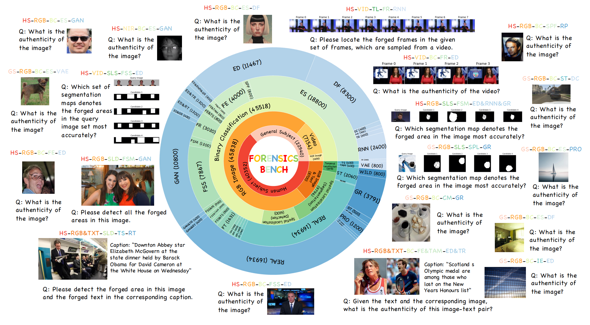
<figcaption aria-hidden="true">image-20250915214229334</figcaption>
</figure>
<blockquote>
<p>图1.Forensics-Bench测试框架概览。该基准测试包含63,000个样本，涵盖从五个不同维度表征伪造行为的112种独特检测类型。如由内而外展示的不同环形结构所示，这五个维度包括：<span
style="color: red;">伪造语义</span>、<span
style="color: orange;">伪造模态</span>、<span
style="color: green;">伪造任务</span>、<span
style="color: lightblue;">伪造类型</span>和<span
style="color: blue;">伪造模型</span>。<br/>从<span
style="color: red;">伪造语义</span>维度来看，基准测试包含以下数据特征：&gt;
HS→人类主体 和 GS→通用主体。<br/>从<span
style="color: orange;">伪造模态</span>维度来看，基准测试包含以下数据特征：&gt;
RGB&amp;TXT→RGB图像与文本、VID→视频以及其他。<br/>从<span
style="color: green;">伪造任务</span>维度来看，基准测试包含以下数据特征：&gt;
TL→时间定位、SLS→空间定位（分割）、BC→二分类等。<br/>从<span
style="color: lightblue;">伪造类型</span>维度来看，基准测试包含以下数据特征：TS→文本置换、FSS→人脸置换（单张）、ES→全合成等。<br/>从<span
style="color: blue;">伪造模型</span>维度来看，基准测试包含由GAN→生成对抗模型、DF→扩散模型、VAE→变分自编码器等生成的数据。<br/>该基准测试使LVLMs在AIGC演进时代能够对多样化伪造检测类型进行全面评估。更多详细缩写请参见附录6。</p>
</blockquote>
<p>​  在实验中，我们评估了22个公开可用的LVLM模型和3个基于Forensics-Bench的专有模型，全面比较它们在伪造检测中的能力。我们将研究结果总结如下。</p>
<ul>
<li>我们发现，Forensics-Bench给最先进的LVLMs带来了巨大的挑战，其中最好的LVLMs只实现了66.7%的整体准确率，突显了鲁棒性伪造检测的独特难度。</li>
<li>在各类伪造类型中，LVLM模型展现出显著的性能差异：它们在欺骗和风格转换等特定伪造类型上表现优异（接近100%)，但在人脸替换（多张面孔）和面部编辑（低于55%)等其他类型上表现欠佳。这一结果揭示了LVLM模型对不同伪造类型存在认知偏差。</li>
<li>在不同的伪造检测任务中，LVLMs在分类任务中通常表现更好，而在空间和时间定位任务中则表现不佳。</li>
<li>针对由主流AI模型合成的伪造品，我们发现当前的低维语言模型（LVLMs）在识别扩散模型生成的伪造品时表现更胜一筹。这一结果揭示了LVLMs在辨别不同AI模型生成的伪造品时存在的能力局限性。</li>
</ul>
<p>​  本文主要贡献可归纳为以下三点：</p>
<p>​  i)我们开发了新型基准测试平台ForensicsBench，该平台基于五种特征维度整合了112种不同类型的伪造检测。<br/>​  ii)在ForensicsBench上对25种主流特征向量学习模型（LVLMs）进行系统性评估，通过大量实验发现这些模型在不同伪造类型上的表现存在显著差异，暴露出其能力局限。<br/>​  iii)我们开展了多维度分析实验，包括干扰条件下的伪造检测和伪造溯源等场景，进一步揭示了LVLMs对伪造行为的理解局限。</p>
<p>​  我们期待ForensicsBench能帮助研究者深入理解LVLMs的伪造检测能力，为未来的设计方案提供重要参考。</p>
<h1 id="相关工作">2.相关工作</h1>
<h2 id="伪造检测">2.1.伪造检测</h2>
<p>​  随着AIGC技术的快速发展[23,28,33]，合成媒体的逼真度不断提升，已与真实内容难以区分。恶意用户可轻易利用这些技术传播虚假信息、伪造司法证据，甚至损害名人声誉，给社会安全带来严峻挑战。为此，众多研究者提出了多种检测合成媒体的方法，旨在确保采集内容的真实性与可靠性[16,19,63,83]。然而，现有方法普遍缺乏泛化能力，在面对未知伪造内容时往往难以保持原有性能[3,18,46,75,95]。为此，学界已提出多种方法[20,25,30,44,45,78,81,82,96,97,111,112]，旨在提升现有防伪检测系统的泛化能力。然而，随着各类生成对抗生成技术（AIGC）的快速发展[23,28,33,100]，伪造样本的多样性和复杂度呈指数级增长，这一挑战被显著放大。因此，为支持强效防伪检测器的研发，构建覆盖全方位检测的综合性评估基准体系已成为当务之急。</p>
<h2 id="lvlms和基准">2.2.LVLMs和基准</h2>
<p>​  随着大型语言模型（LLMs）[11,68,70,86,87,98]的快速发展，研究者们对提升这些模型视觉理解能力的兴趣与日俱增。开发视觉语言模型（LVLMs）的关键，在于基于LLM基础实现视觉内容与语言的精准对齐。CLIP
[73]是该领域的先驱研究，通过对比学习技术利用海量图文数据对齐视觉与语言表征，构建统一的潜在空间。随后，为增强LLM对视觉内容的接收与理解能力，Mini-GPT4
[115]采用多层感知机（MLP）直接连接视觉编码器与冻结的LLM。近年来，研究转向通过指令调优技术[7,14,21,52,53,61,101]对现有模型进行微调。例如，LLaVA
[53]通过构建158K指令跟随数据集对模型进行微调，最终使模型获得了卓越的视觉理解能力。<br/>​  要准确评估这些语言理解模型（LVLMs）的真实能力，建立全面且具有挑战性的基准测试至关重要[26,43,57,77,79,94,104,105]。早期的单任务基准测试[29,62,79]，如MS-COCO
[79]和VQA
[29]，通常仅针对特定方面进行评估。随着LVLMs能够处理日益多样化任务的能力提升，诸如MM-Bench
[57]、MMMU [105]和MMT-Bench
[102]等更全面的基准测试[10,26,43,57,77,94,104,105]应运而生，旨在从多维度评估模型性能。这些覆盖广泛任务的基准测试全面检验了LVLMs的真实能力，不仅深化了我们对其能力边界的认知，更为后续优化提供了关键洞见。然而，在伪造检测的语境下，仍然缺乏一个全面的评估基准来从细粒度的角度整体评估LVLMs的伪造检测能力。</p>
<h2 id="伪造检测和lvlms">2.3.伪造检测和LVLMs</h2>
<p>​  近年来，利用大型视觉语言模型（LVLMs）进行伪造检测因其在理解多样化视觉内容方面的卓越能力而备受关注。多项研究[6,35,37,50,55,72,80,93]已证实LVLMs在伪造检测任务中的有效性。为更好地评估该领域中LVLMs的能力，业界推出了多个基准测试[47,56,80,88,113]来验证其性能。然而，这些评估基准通常存在局限性，仅能部分反映LVLMs在伪造检测领域的实际能力。针对这一缺陷，我们提出“取证基准”（Forensics-Bench），该平台整合了112种不同伪造检测类型中的63,000个多模态问题，为当前最先进的LVLMs提供了全面的评估测试平台。</p>
<h1 id="forensics-bench">3.Forensics-Bench</h1>
<p>​  本节将介绍Forensics-Bench的主要组成模块，其中第3.1节首先介绍Forensics-Bench的设计原则，第3.2节详细阐述Forensics-Bench的构建过程，并对Forensics-Bench进行简要概述。</p>
<h2 id="基准设计">3.1.基准设计</h2>
<p>​  为了在伪造检测的背景下为LVLMs提供一个全面的测试平台，我们从伪造语义、伪造模态、伪造任务、伪造类型和伪造模型五个角度设计我们的Forensics-Bench来描述不同的伪造。</p>
<p>​  <strong>伪造语义</strong><br/>​  鉴于深度伪造技术对社会安全构成的重大威胁，人类主体始终是以往伪造检测研究的重点领域[18,36,46,75]。此外，考虑到诸如稳定扩散模型[71,74]等新型生成模型的突破性能力，这些模型在文本提示自由度较高的情况下，新生成的媒体内容可包含多样化语义特征。因此，未来伪造检测器必须确保不对伪造图像/视频中呈现的特定类型内容产生偏见。为此，我们建议在法证基准测试中将数据划分为人类主体与其他通用主体两类，以此评估语言验证模型（LVLMs）在处理不同语义特征时的表现效果。</p>
<p>​  <strong>伪造模态</strong><br/>​  近年来，伪造手段的呈现形式日趋多样化[5,38,46,75,78,91,106]，这可能对我们的日常生活造成更大影响。为此，我们建议从RGB图像、近红外图像、视频和文本等不同模态对伪造数据进行特征分析，以评估LVLMs在这些模态间的性能差异是否显著，从而揭示其偏好特征。</p>
<p>​  <strong>伪造任务</strong><br/>​  伪造检测的核心目标在于判断给定媒体内容是真实还是伪造，即进行二元分类[67,75,89,92]。此外，已有研究[32,42]着重于图像/视频中伪造区域的定位，为用户提供更精细且可解释的信息。基于此视角，我们提出涵盖四大常见任务的检测方案：伪造二元分类、伪造空间定位（分割掩膜）、伪造空间定位（边界框）以及伪造时间定位。该设计囊括了大多数伪造检测场景，便于对不同低维线性模型（LVLMs）在各类任务中的性能进行详细对比。</p>
<p>​  <strong>伪造类型</strong><br/>​  随着大量生成对抗性伪造技术（AIGC）的涌现，如今的恶意用户能够将多种操作应用于不同类型的伪造场景。本文将这些操作统称为不同伪造类型。例如，用户可以对任意真人视频进行换脸或面部重演[75]，甚至直接从零开始合成整段视频[41,100]。为此，我们提出从取证基准平台的角度对伪造数据进行分类，涵盖完整合成、面部伪造、面部编辑、文本属性操控、文本替换、面部重演、多面体换脸、单面体换脸、复制移动、删除、拼接、图像增强、脱离上下文、风格转换，以及上述操作的不同组合形式。具体分类详见附录8。这种全面的设计方案有助于评估语言验证模型（LVLMs）在面对多样化复杂伪造类型时是否能保持稳健性能。</p>
<p>​  <strong>伪造模型</strong><br/>​  伪造检测领域的另一项重要研究方向，是识别应用于给定输入的伪造模型[27,32,99]。随着生成式模型的持续涌现和应用，这类模型可能不断生成伪造样本，这将对未来的伪造检测器构成持续挑战。为此，在我们的基准测试中，我们提出收集来自主流AI模型生成的样本，包括扩散模型、编码器-解码器、基于图形的模型、生成对抗网络（GAN）、变分自编码器（VAE）、循环神经网络（RNN）等。具体说明详见附录8。这种设计有助于系统分析LVLM模型在不同AI模型数据源上的性能表现。</p>
<h2 id="数据收集">3.2.数据收集</h2>
<p>​  基于上述综合基准设计，我们以自上而下的层次结构收集我们的取证基准。</p>
<figure>
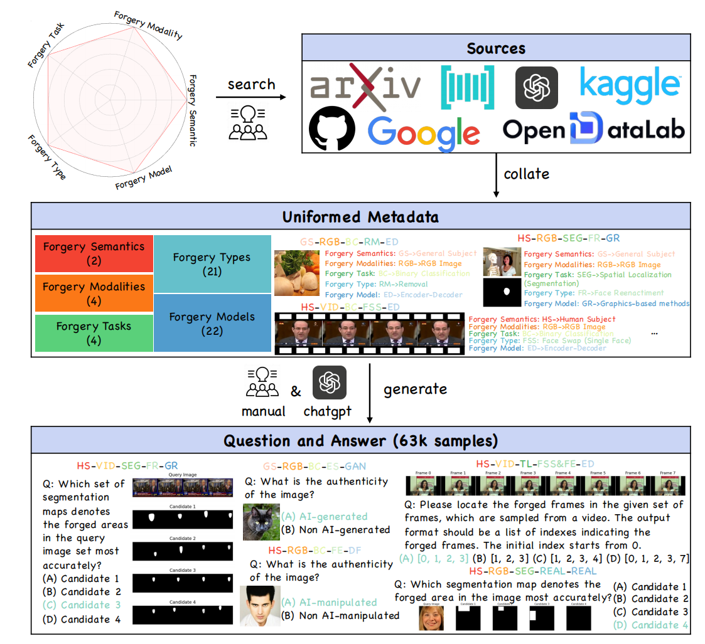
<figcaption aria-hidden="true">image-20250915221152685</figcaption>
</figure>
<blockquote>
<p>图3.Forensics-Bench数据采集流程示意图。首先，基于Forensics-Bench设计的五个维度，我们从互联网上检索相关公开数据集。接着，将获取的数据整理成统一的元数据格式。最后，我们将原始数据手动转换为人工设计的问答（Q&amp;A）格式，或借助ChatGPT进行智能问答转换。该平台支持从多维度对各类伪造样本进行评估。点击放大可查看更清晰的可视化效果</p>
</blockquote>
<p>​  如图3所示，所有合著者首先进行头脑风暴，并列出以往文献中展示的共同伪造语义、伪造模态、伪造任务、伪造类型和伪造模型。接着，我们为每个列出的项目检索相关的公开数据集，尽可能涵盖各类伪造检测类型。最后，我们通过人工或借助ChatGPT的方式，构建相应的多选问答（Q&amp;A）样本。</p>
<p>​  <strong>数据集搜索</strong><br/>​  基于我们基准测试设计的广泛适用性，我们从公开数据集和学术资源库中精选了涵盖伪造检测领域的完整数据集。这些数据源经过精心筛选，确保数据集具有广泛的覆盖范围。同时，我们整合了合成数据与真实数据，以全面反映当代伪造检测面临的实际复杂挑战。具体数据来源详见附录7。在数据收集完成后，我们实施了全面的数据清洗与过滤流程，显著提升了数据集的质量与实用性。需要特别说明的是，我们仅对公开数据集的测试/验证集进行清洗处理，最大限度避免LVLMs（语言验证模型）接触Forensics-Bench中的原始数据。通过人工筛查剔除重复样本和低质量数据，确保数据集始终保持高标准的质量要求。然后对所有来源的伪造数据进行标准化，随后进行细致的注释和转换，以确保整个数据集构建过程的正确性。</p>
<p>​  <strong>元数据构造</strong><br/>​  我们对所有清洗后的数据进行标准化处理，生成描述各类伪造检测类型所需元信息的元数据。通常情况下，我们会从每个公开数据集中随机选取200个样本进行测试，记录元数据结构中的关键信息，如伪造类型、伪造任务、伪造模型等。考虑到不同伪造模型的流行程度，某些检测类型可能源自多个公开数据集，例如通过扩散模型和生成对抗网络（GAN）合成的伪造案例。此外，图像分辨率、图文配对等细节也会被记录在元数据中。对于视频格式的样本，我们会统一提取每段伪造视频的帧并记录在元数据里。最终，这些元数据将用于生成多项选择题问答（Q&amp;A），从而评估语言验证模型（LVLMs）在伪造检测场景下的性能表现。</p>
<p>​  <strong>问答生成</strong><br/>​  根据记录的元数据，我们随后基于人工规则或ChatGPT生成对应的多选题问答。部分示例如图3所示。例如，在伪造二分类任务中，某些选项可能包含AI生成/非AI生成或AI操控/非AI操控，具体取决于媒体内容是完全由AI模型合成，还是基于真实素材经AI模型修改。对于伪造空间定位任务（分割掩膜），错误选项通过向真实值添加随机扰动生成。这种选择设计能有效降低生成题目的歧义性，增强正确答案与错误答案的相关性，从而确保法证基准评估结果的公平性。</p>
<p>​  <strong>数据集统计</strong><br/>​  最终，Forensics-Bench基准测试集包含63292个数据样本，涵盖46358个伪造样本和16934个真实样本，严格遵循先前数据集[18,46,75]的设计比例——考虑到AIGC技术的多样性，伪造样本占绝对多数。该基准测试集全面覆盖了2种伪造语义、4种伪造模态、4类伪造任务、21种伪造类型及22种伪造模型，系统评估了语言视觉模型（LVLMs）在伪造检测场景中的感知能力、定位能力和推理能力。表1详细对比了该基准与以往大型视觉语言模型在伪造检测领域的评估标准。据我们所知，Forensics-Bench是迄今为止规模最大的LVLMs伪造检测基准测试集，不仅拥有最丰富的伪造样本类型，更具备多维度的评估视角。</p>
<h2 id="其他评价协议">3.3.其他评价协议</h2>
<p>​  得益于Forensics-Bench的全面性，我们可以通过该基准测试进一步完善对LVLMs伪造检测能力的评估。为此，我们还提出了两项由Forensics-Bench支持的额外评估协议，为LVLMs的能力提供更精细的分析。</p>
<p>​  <strong>协议1.鲁棒的伪造检测</strong><br/>​  受先前研究[31,36]启发，我们在样本中引入常见干扰因素，以评估低维线性模型（LVLMs）在现实噪声环境中的防伪检测能力。这些干扰因素常见于互联网场景，包括色彩饱和度调整、局部块状失真、对比度改变、高斯模糊处理、白高斯噪声以及JPEG压缩技术，每种干扰都包含五个不同强度等级。该评估方案能有效检验LVLMs在真实场景中的防伪检测性能，为其实用化部署提供可行性验证。</p>
<p>​  <strong>协议2.伪造归属</strong><br/>​  受先前研究[27,99]启发，我们通过Forensics-Bench数据集评估了语言验证模型（LVLMs）的伪造检测能力。该数据集由多种AI模型生成或篡改的伪造数据构成。具体而言，我们将Forensics-Bench中的问题重新设计为要求LVLMs识别给定媒体所应用的人工智能模型。错误选择项随机采样自Forensics-Bench列出的22个伪造模型。需要说明的是，本实验仅采用Forensics-Bench中具有二元伪造分类特征的样本进行测试。这种评估视角有助于深入分析LVLMs的伪造检测能力，为模型的回答提供可解释且详尽的支持依据。</p>
<h1 id="实验">4.实验</h1>
<h2 id="实验设置">4.1.实验设置</h2>
<p>​  <strong>LVLM模型</strong><br/>​  基于我们提出的取证基准测试框架，我们对22款开源语言模型进行了实验评估，包括LLaVA-NEXT-34B
[54], LLaVA-v1.5-7B-XTuner [13], LLaVA-v1.5-13B-XTuner [13],
InternVLChat-V1-2 [8, 86], LLaVA-NEXT-13B [54], mPLUG-Owl2[101],
LLaVA-v1.5-7B [52, 53], LLaVA-v1.5-13B [52,53], Yi-VL-34B [103],
CogVLM-Chat [90], XComposer2[21], LLaVA-InternLM2-7B [13], VisualGLM-6B,
LLaVANEXT-7B [54], LLaVA-InternLM-7B [13], ShareGPT4V-7B [7],
InternVL-Chat-V1-5 [8, 86], DeepSeek-VL-7B[58], Yi-VL-6B [103],
InstructBLIP-13B [14], Qwen-VLChat [2] and Monkey-Chat
[48]。此外，我们还对3款商用模型进行了评估：GPT4o [69]、Gemini 1.5 Pro
[85]和Claude 3.5 Sonnet [1]。</p>
<p>​  评估细节<br/>​  基于OpenCompass[12]提供的评估工具[22]，我们参照前人研究[64,102]开展评估流程：</p>
<p>​  1)人工核查选项字母是否出现在LVLMs（语言模型）的回答中；<br/>​  2)人工手动检查选项内容是否出现在LVLM的答案中；<br/>​  3)借助ChatGPT辅助提取匹配选项。</p>
<p>​  若上述提取仍不成功，则将模型答案设为Z
[105]。实验中采用准确率作为评估指标。</p>
<h2 id="主要结果">4.2.主要结果</h2>
<p>​  主要评估结果汇总于表2。</p>
<figure>
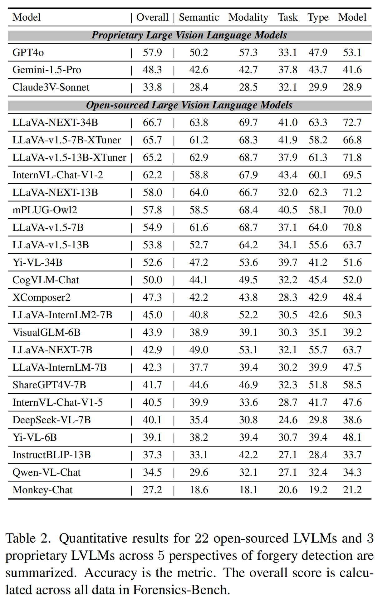
<figcaption aria-hidden="true">image-20250915222628491</figcaption>
</figure>
<p>​  Forensics-Bench设计中各维度的评分均基于相关样本的平均准确率计算得出。通过分析我们得出以下结论：</p>
<p>​  1）研究发现Forensics-Bench对现有主流语言变体模型（LVLMs）提出了重大挑战。其中表现最佳的LLaVA-NEXT-34B模型在Forensics-Bench上的整体准确率仅为66.7%，凸显了通用伪造检测的特殊难度。<br/>​  2）在伪造检测场景下，专有语言变体模型（如GPT-4o)的表现明显逊色于开源模型，特别是LLaVA系列模型的性能差距更为显著。这主要是因为专有LVLMs倾向于给出更保守的答案，承认他们不能以很强的信心得出输入的真实性。<br/>​  3）我们进一步从ForensicsBench的各个角度进行了详细分析：</p>
<h3 id="对伪造语义的分析">4.2.1.对伪造语义的分析</h3>
<p>​  我们从伪造语义角度对25种低维语言模型（LVLMs）的详细性能进行了图4展示。可以看出，大多数LVLMs在人类主体与普通主体的内容对比中，并未表现出显著偏向性。这为未来基于LVLMs范式开发全方位伪造检测器提供了重要起点。</p>
<figure>
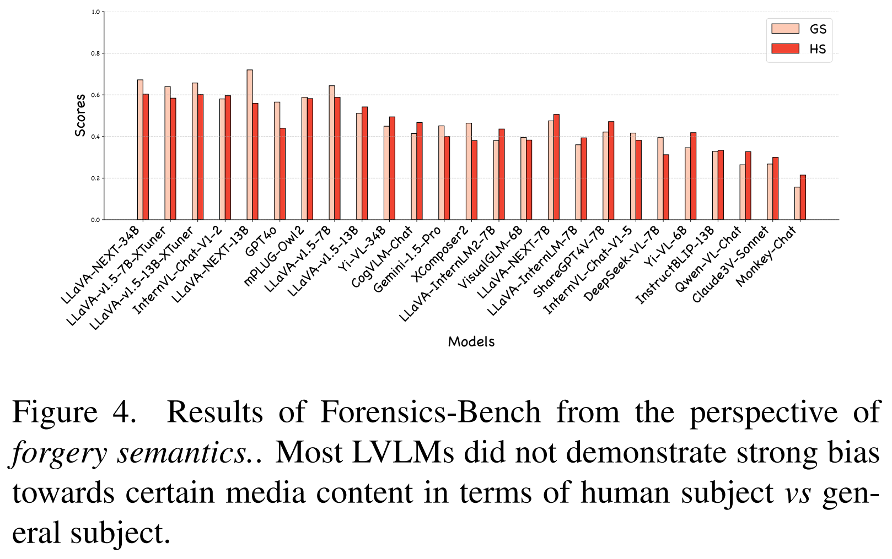
<figcaption aria-hidden="true">image-20250915222920598</figcaption>
</figure>
<h3 id="对伪造模式的分析">4.2.2.对伪造模式的分析</h3>
<p>​  我们在图5中从伪造模态角度详细展示了25种低维线性模型（LVLM）的性能表现。研究发现，表现最佳的LVLM（如LLaVA-NEXT-34B)在近红外（NIR）模态下对伪造图像展现出卓越的二分类能力。然而当输入内容同时包含RGB图像和文本[78]时，这些模型就难以保持良好表现。未来仍需探索如何设计能适应不同模态的鲁棒型伪造检测器。</p>
<figure>
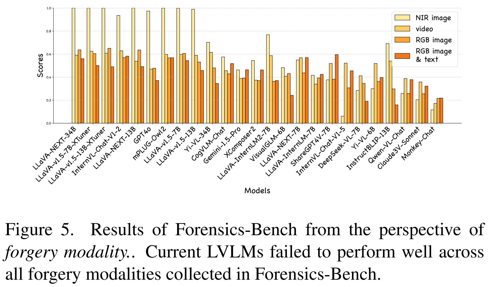
<figcaption aria-hidden="true">image-20250915223018140</figcaption>
</figure>
<h3 id="对伪造任务的分析">4.2.3.对伪造任务的分析</h3>
<p>​  图6展示了25种LVLM模型在伪造任务中的具体表现。我们发现，大多数LVLM模型在伪造二分类（BC）任务中表现出相对较高的性能，但在伪造空间定位（分割掩膜/边界框）（SLS/SLD）和伪造时间定位（TL）任务中难以保持强劲的性能。</p>
<figure>
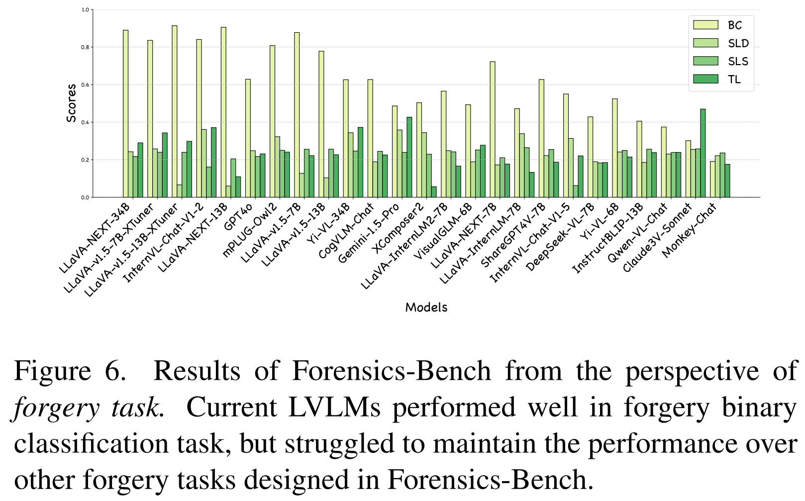
<figcaption aria-hidden="true">image-20250915223227914</figcaption>
</figure>
<h3 id="对伪造类型的分析">4.2.4.对伪造类型的分析</h3>
<p>​  图7从伪造类型角度展示了25种低级验证模型（LVLM）的详细性能表现。首先，我们发现当前LVLM模型在处理多种伪造类型时仍面临挑战，例如人脸替换（多面）、复制移动（CM）、移除（RM）和拼接（SPL）。其次，我们注意到像LLaVA系列模型这样的领先LVLM，在人脸伪造（SPF）、图像增强（IE）、风格转换（ST）和语境无关（OOC）等特定类型中已展现出色表现，这表明它们具备发展为通用型伪造检测器的潜力。</p>
<figure>
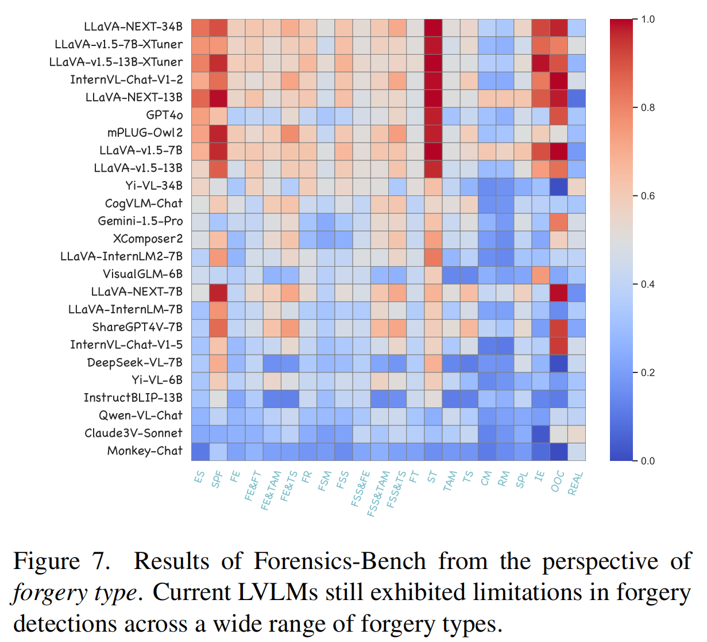
<figcaption aria-hidden="true">image-20250915223333883</figcaption>
</figure>
<h3 id="对伪造模型的分析">4.2.5.对伪造模型的分析</h3>
<p>​  图8从伪造模型角度详细展示了25种LVLM的性能表现。值得注意的是，主流LVLM在应对3D遮罩和剪纸等欺骗性伪造时表现出色。针对AI模型生成的伪造样本，我们发现当前LVLM对扩散模型（DF）输出的伪造品识别效果优于生成对抗网络（GAN），这可能暴露出LVLM对不同AI模型生成的伪造品辨别能力有限。此外，当遇到编码器/解码器与图形方法（ED&amp;GR）、生成对抗网络与Transformer（GAN&amp;TR）等多模型组合生成的伪造品时，现有LVLM面临识别挑战。这类新型伪造手段可能在未来对LVLM的伪造检测能力构成更大威胁。</p>
<figure>
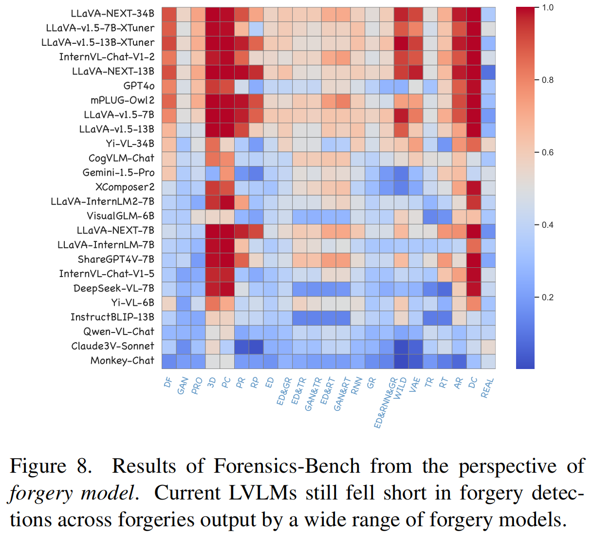
<figcaption aria-hidden="true">image-20250915223514944</figcaption>
</figure>
<h2 id="其他评价方案分析">4.3.其他评价方案分析</h2>
<p>​  除了对Forensics-Bench进行直接评估外，我们还进一步开展了鲁棒伪造检测和伪造归因，以补充LVLMs的伪造检测能力评估，并基于Forensics-Bench的全面设计提供了更详细的分析。</p>
<h3 id="协议1.鲁棒的伪造检测">4.3.1.协议1.鲁棒的伪造检测</h3>
<p>​  在本实验中，我们重点评估了开源顶尖语言验证模型的性能表现，包括LLaVA-NEXT-
34B、LLaVA-v1.5-7B-XTuner、InternVL-Chat-V1-2和mPLUG-Owl2。根据前期研究[20,31,36]，我们统计了各类扰动在五个强度等级下的平均综合得分，具体结果详见表3。</p>
<figure>
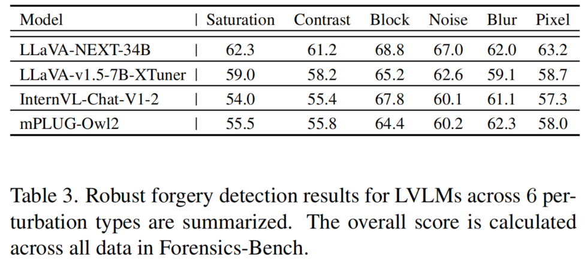
<figcaption aria-hidden="true">image-20250915224117064</figcaption>
</figure>
<p>​  值得注意的是，当采用改变颜色对比度或饱和度等扰动手段时，语言验证模型的伪造检测能力会显著下降。而局部块状失真等其他扰动方式则负面影响较小，甚至可能增强模型识别伪造文本的能力。我们认为这主要是因为像局部块状失真这样的扰动会显著减少伪造内容的偏差，这在之前的研究所验证对伪造检测是有效的[20,49,96,97]。</p>
<h3 id="协议2.伪造归属">4.3.2.协议2.伪造归属</h3>
<p>​  在本实验中，我们将基准测试中的伪造二分类数据重新调整为伪造归因样本。例如，我们向LVLMs询问“该RGB图像应用了哪种伪造模型？”，并提供了从伪造模型集中随机抽取的四个选项。同时，我们评估了LLaVA-NEXT-34B、LLaVA-v1.5-7B-XTuner、InternVL-Chat-V1-2和mPLUG-Owl2等模型的性能表现。表4汇总了各模型的准确率数据。</p>
<figure>
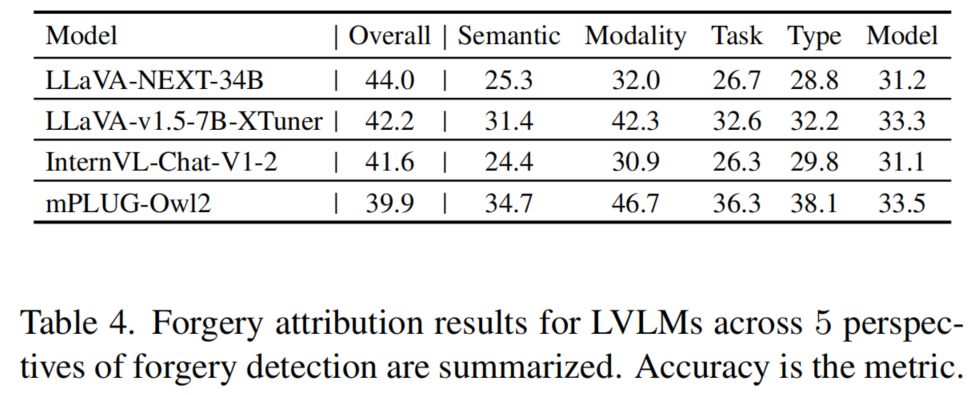
<figcaption aria-hidden="true">image-20250915224104343</figcaption>
</figure>
<p>​  研究发现，尽管这些模型在伪造二分类任务中表现出色（参见图6），但在对不同伪造模型进行细粒度分类时却遭遇瓶颈，这凸显了复杂伪造检测场景中的技术挑战。</p>
<h1 id="结论">5.结论</h1>
<p>​  本文提出Forensics-Bench综合基准测试框架，旨在全面评估学习语言模型（LVLMs）在伪造媒体识别中的鉴别能力，涵盖特征识别、定位及推理等多维度验证。通过这种系统化的任务设计，本基准测试为当前主流的LVLMs在伪造检测领域的应用提供了全面评估。实验结果有效揭示了这些模型在该领域的局限性与偏差，为提升其在全方位伪造检测任务中的性能表现提供了重要参考。我们期待该基准测试能成为探索LVLMs在伪造检测任务中应用的平台，推动其整体能力图谱向更高级别的通用人工智能（AGI）发展。</p>
<h1 id="附录">6.附录</h1>
<h2 id="forensics-bench的缩写">6.1.Forensics-Bench的缩写</h2>
<p>​  表5中列出了全文使用的详细缩略语。</p>
<figure>
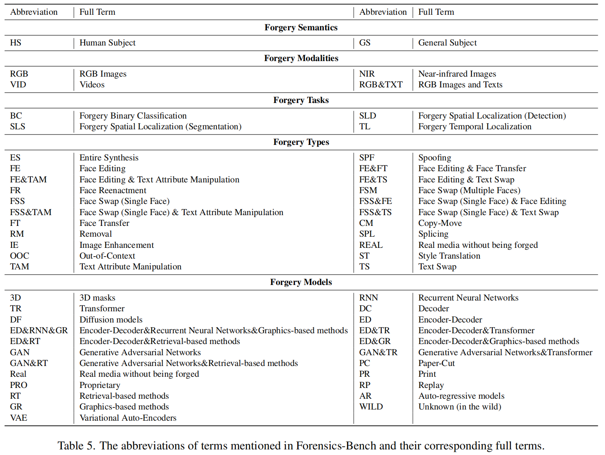
<figcaption aria-hidden="true">image-20250915224328859</figcaption>
</figure>
</article><div class="post-copyright"><div class="post-copyright__author"><span class="post-copyright-meta"><i class="fas fa-circle-user fa-fw"></i>文章作者: </span><span class="post-copyright-info"><a href="https://zhaozw-szu.github.io">Zhaozw</a></span></div><div class="post-copyright__type"><span class="post-copyright-meta"><i class="fas fa-square-arrow-up-right fa-fw"></i>文章链接: </span><span class="post-copyright-info"><a href="https://zhaozw-szu.github.io/Forensics-Bench/">https://zhaozw-szu.github.io/Forensics-Bench/</a></span></div><div class="post-copyright__notice"><span class="post-copyright-meta"><i class="fas fa-circle-exclamation fa-fw"></i>版权声明: </span><span class="post-copyright-info">本博客所有文章除特别声明外，均采用 <a href="https://creativecommons.org/licenses/by-nc-sa/4.0/" target="_blank">CC BY-NC-SA 4.0</a> 许可协议。转载请注明来自 <a href="https://zhaozw-szu.github.io" target="_blank">喵</a>！</span></div></div><div class="tag_share"><div class="post-meta__tag-list"></div><div class="post_share"><div class="social-share" data-image="/postimages/Forensics-Bench/image-20250915214229334.png" data-sites="facebook,twitter,wechat,weibo,qq"></div><link rel="stylesheet" href="https://cdn.jsdelivr.net/npm/butterfly-extsrc@1.1.3/sharejs/dist/css/share.min.css" media="print" onload="this.media='all'"><script src="https://cdn.jsdelivr.net/npm/butterfly-extsrc@1.1.3/sharejs/dist/js/social-share.min.js" defer></script></div></div><nav class="pagination-post" id="pagination"><div class="prev-post pull-left"><a href="/Fusion-Transformer-with-Object-Mask-Guidance-for-Image-Forgery-Analysis/" title="Fusion_Transformer_with_Object_Mask_Guidance_for_Image_Forgery_Analysis"><div class="pagination-info"><div class="label">上一篇</div><div class="prev_info">Fusion_Transformer_with_Object_Mask_Guidance_for_Image_Forgery_Analysis</div></div></a></div><div class="next-post pull-right"><a href="/Poster-Query-efficient-Black-box-Attack-for-Image-Forgery-Localization-via-Reinforcement-Learning/" title="Poster:Query-efficient Black-box Attack for Image Forgery Localization via Reinforcement Learning"><div class="pagination-info"><div class="label">下一篇</div><div class="next_info">Poster:Query-efficient Black-box Attack for Image Forgery Localization via Reinforcement Learning</div></div></a></div></nav><hr class="custom-hr"/><div id="post-comment"><div class="comment-head"><div class="comment-headline"><i class="fas fa-comments fa-fw"></i><span> 评论</span></div><div class="comment-tools"><div class="comment-randomInfo"><a onclick="addRandomCommentInfo()" href="javascript:void(0)" rel="external nofollow" data-pjax-state="">匿名评论</a></div></div></div><div class="comment-wrap"><div><div id="twikoo-wrap"></div></div></div><script>function addRandomCommentInfo() {
  if (!confirm('开启匿名评论后，任何人将无法回复你的评论（包括博主），是否开启？')) {
    return;
  }
  var inputElements = document.getElementsByClassName('el-input__inner');
  const adjectives = ['幽默的', '豁达的', '温暖的', '优雅的', '活泼的', '迷人的', '甜美的', '聪明的', '坚定的', '善于思考的'];
  const nouns = ['橙子', '茄子', '西瓜', '辣椒', '草莓', '葡萄', '胡萝卜', '柠檬', '苹果', '香蕉'];
  for(var i = 0; i < inputElements.length; i++) {
    var input = inputElements[i];
    var name = input.getAttribute('name');
    const randomAdj = adjectives[Math.floor(Math.random() * adjectives.length)];
    const randomNoun = nouns[Math.floor(Math.random() * nouns.length)];

    switch (name) {
      case 'nick':
        input.value = `${randomAdj}${randomNoun}`;
        break;
      case 'mail':
        input.value = 'zhaozw-szu@users.noreply.github.com';
        break;
      case 'link':
        input.value = 'https://zhaozw-szu.github.io/';
        break;
      default:
        break;
    }
  }  
}</script></div></div><div class="aside-content" id="aside-content"><div class="card-widget card-info"><div class="is-center"><div class="avatar-img"></div><div class="author-info__name">Zhaozw</div><div class="author-info__description">人完成了引以为豪的事,才能够感到荣耀，否则,虚伪的自豪只会腐蚀心灵。</div></div><div class="card-info-data site-data is-center"><a href="/archives/"><div class="headline">文章</div><div class="length-num">182</div></a><a href="/tags/"><div class="headline">标签</div><div class="length-num">25</div></a><a href="/categories/"><div class="headline">分类</div><div class="length-num">25</div></a></div><a id="card-info-btn" target="_blank" rel="noopener" href="https://github.com/zhaozw-szu"><i class="fab fa-github"></i><span>Follow Me</span></a><div class="card-info-social-icons is-center"><a class="social-icon" href="https://github.com/zhaozw-szu" target="_blank" title="Github"><i class="fab fa-github" style="color: #24292e;"></i></a><a class="social-icon" href="/2300432033@email.szu.edu.com" target="_blank" title="Email"><i class="fas fa-envelope" style="color: #4a7dbe;"></i></a></div></div><div class="card-widget card-announcement"><div class="item-headline"><i class="fas fa-bullhorn fa-shake"></i><span>公告</span></div><div class="announcement_content"><a href="/code">代码页面</a>：收罗图像取证安全领域已公布/待公布的代码 <br>,<a href="/competition">比赛页面</a>：收罗图像取证安全领域的比赛</div></div><div class="sticky_layout"><div class="card-widget" id="card-toc"><div class="item-headline"><i class="fas fa-stream"></i><span>目录</span><span class="toc-percentage"></span></div><div class="toc-content"><ol class="toc"><li class="toc-item toc-level-1"><a class="toc-link" href="#%E6%91%98%E8%A6%81"><span class="toc-text">摘要</span></a></li><li class="toc-item toc-level-1"><a class="toc-link" href="#%E5%BC%95%E8%A8%80"><span class="toc-text">1.引言</span></a></li><li class="toc-item toc-level-1"><a class="toc-link" href="#%E7%9B%B8%E5%85%B3%E5%B7%A5%E4%BD%9C"><span class="toc-text">2.相关工作</span></a><ol class="toc-child"><li class="toc-item toc-level-2"><a class="toc-link" href="#%E4%BC%AA%E9%80%A0%E6%A3%80%E6%B5%8B"><span class="toc-text">2.1.伪造检测</span></a></li><li class="toc-item toc-level-2"><a class="toc-link" href="#lvlms%E5%92%8C%E5%9F%BA%E5%87%86"><span class="toc-text">2.2.LVLMs和基准</span></a></li><li class="toc-item toc-level-2"><a class="toc-link" href="#%E4%BC%AA%E9%80%A0%E6%A3%80%E6%B5%8B%E5%92%8Clvlms"><span class="toc-text">2.3.伪造检测和LVLMs</span></a></li></ol></li><li class="toc-item toc-level-1"><a class="toc-link" href="#forensics-bench"><span class="toc-text">3.Forensics-Bench</span></a><ol class="toc-child"><li class="toc-item toc-level-2"><a class="toc-link" href="#%E5%9F%BA%E5%87%86%E8%AE%BE%E8%AE%A1"><span class="toc-text">3.1.基准设计</span></a></li><li class="toc-item toc-level-2"><a class="toc-link" href="#%E6%95%B0%E6%8D%AE%E6%94%B6%E9%9B%86"><span class="toc-text">3.2.数据收集</span></a></li><li class="toc-item toc-level-2"><a class="toc-link" href="#%E5%85%B6%E4%BB%96%E8%AF%84%E4%BB%B7%E5%8D%8F%E8%AE%AE"><span class="toc-text">3.3.其他评价协议</span></a></li></ol></li><li class="toc-item toc-level-1"><a class="toc-link" href="#%E5%AE%9E%E9%AA%8C"><span class="toc-text">4.实验</span></a><ol class="toc-child"><li class="toc-item toc-level-2"><a class="toc-link" href="#%E5%AE%9E%E9%AA%8C%E8%AE%BE%E7%BD%AE"><span class="toc-text">4.1.实验设置</span></a></li><li class="toc-item toc-level-2"><a class="toc-link" href="#%E4%B8%BB%E8%A6%81%E7%BB%93%E6%9E%9C"><span class="toc-text">4.2.主要结果</span></a><ol class="toc-child"><li class="toc-item toc-level-3"><a class="toc-link" href="#%E5%AF%B9%E4%BC%AA%E9%80%A0%E8%AF%AD%E4%B9%89%E7%9A%84%E5%88%86%E6%9E%90"><span class="toc-text">4.2.1.对伪造语义的分析</span></a></li><li class="toc-item toc-level-3"><a class="toc-link" href="#%E5%AF%B9%E4%BC%AA%E9%80%A0%E6%A8%A1%E5%BC%8F%E7%9A%84%E5%88%86%E6%9E%90"><span class="toc-text">4.2.2.对伪造模式的分析</span></a></li><li class="toc-item toc-level-3"><a class="toc-link" href="#%E5%AF%B9%E4%BC%AA%E9%80%A0%E4%BB%BB%E5%8A%A1%E7%9A%84%E5%88%86%E6%9E%90"><span class="toc-text">4.2.3.对伪造任务的分析</span></a></li><li class="toc-item toc-level-3"><a class="toc-link" href="#%E5%AF%B9%E4%BC%AA%E9%80%A0%E7%B1%BB%E5%9E%8B%E7%9A%84%E5%88%86%E6%9E%90"><span class="toc-text">4.2.4.对伪造类型的分析</span></a></li><li class="toc-item toc-level-3"><a class="toc-link" href="#%E5%AF%B9%E4%BC%AA%E9%80%A0%E6%A8%A1%E5%9E%8B%E7%9A%84%E5%88%86%E6%9E%90"><span class="toc-text">4.2.5.对伪造模型的分析</span></a></li></ol></li><li class="toc-item toc-level-2"><a class="toc-link" href="#%E5%85%B6%E4%BB%96%E8%AF%84%E4%BB%B7%E6%96%B9%E6%A1%88%E5%88%86%E6%9E%90"><span class="toc-text">4.3.其他评价方案分析</span></a><ol class="toc-child"><li class="toc-item toc-level-3"><a class="toc-link" href="#%E5%8D%8F%E8%AE%AE1.%E9%B2%81%E6%A3%92%E7%9A%84%E4%BC%AA%E9%80%A0%E6%A3%80%E6%B5%8B"><span class="toc-text">4.3.1.协议1.鲁棒的伪造检测</span></a></li><li class="toc-item toc-level-3"><a class="toc-link" href="#%E5%8D%8F%E8%AE%AE2.%E4%BC%AA%E9%80%A0%E5%BD%92%E5%B1%9E"><span class="toc-text">4.3.2.协议2.伪造归属</span></a></li></ol></li></ol></li><li class="toc-item toc-level-1"><a class="toc-link" href="#%E7%BB%93%E8%AE%BA"><span class="toc-text">5.结论</span></a></li><li class="toc-item toc-level-1"><a class="toc-link" href="#%E9%99%84%E5%BD%95"><span class="toc-text">6.附录</span></a><ol class="toc-child"><li class="toc-item toc-level-2"><a class="toc-link" href="#forensics-bench%E7%9A%84%E7%BC%A9%E5%86%99"><span class="toc-text">6.1.Forensics-Bench的缩写</span></a></li></ol></li></ol></div></div></div></div></main><footer id="footer"><div id="footer-wrap"><div class="copyright">&copy;2020 - 2025 By Zhaozw</div><div class="framework-info"><span>框架 </span><a target="_blank" rel="noopener" href="https://hexo.io">Hexo</a><span class="footer-separator">|</span><span>主题 </span><a target="_blank" rel="noopener" href="https://github.com/jerryc127/hexo-theme-butterfly">Butterfly</a></div></div><script src="https://cdn.bootcdn.net/ajax/libs/mermaid/8.13.8/mermaid.min.js"></script></footer></div><div id="rightside"><div id="rightside-config-hide"><button id="readmode" type="button" title="阅读模式"><i class="fas fa-book-open"></i></button><button id="darkmode" type="button" title="浅色和深色模式转换"><i class="fas fa-adjust"></i></button><button id="hide-aside-btn" type="button" title="单栏和双栏切换"><i class="fas fa-arrows-alt-h"></i></button></div><div id="rightside-config-show"><button id="rightside-config" type="button" title="设置"><i class="fas fa-cog fa-spin"></i></button><button class="close" id="mobile-toc-button" type="button" title="目录"><i class="fas fa-list-ul"></i></button><a id="to_comment" href="#post-comment" title="直达评论"><i class="fas fa-comments"></i></a><button id="go-up" type="button" title="回到顶部"><span class="scroll-percent"></span><i class="fas fa-arrow-up"></i></button></div></div><div><script src="/js/utils.js?v=4.13.0"></script><script src="/js/main.js?v=4.13.0"></script><script defer src="https://npm.elemecdn.com/swiper@8.4.2/swiper-bundle.min.js"></script><script defer data-pjax src="/js/custom/swiper_init.js"></script><script src="https://cdn.jsdelivr.net/npm/@fancyapps/ui@5.0.33/dist/fancybox/fancybox.umd.min.js"></script><div class="js-pjax"><script>if (!window.MathJax) {
  window.MathJax = {
    tex: {
      inlineMath: [['$', '$'], ['\\(', '\\)']],
      tags: 'all'
    },
    chtml: {
      scale: 1.1
    },
    options: {
      renderActions: {
        findScript: [10, doc => {
          for (const node of document.querySelectorAll('script[type^="math/tex"]')) {
            const display = !!node.type.match(/; *mode=display/)
            const math = new doc.options.MathItem(node.textContent, doc.inputJax[0], display)
            const text = document.createTextNode('')
            node.parentNode.replaceChild(text, node)
            math.start = {node: text, delim: '', n: 0}
            math.end = {node: text, delim: '', n: 0}
            doc.math.push(math)
          }
        }, '']
      }
    }
  }
  
  const script = document.createElement('script')
  script.src = 'https://cdn.jsdelivr.net/npm/mathjax@3.2.2/es5/tex-mml-chtml.min.js'
  script.id = 'MathJax-script'
  script.async = true
  document.head.appendChild(script)
  //- console.log('MathJax loaded')
} else {
  // 重置 TeX 状态并重新渲染
  MathJax.startup.promise.then(() => {
    MathJax.texReset();  // 重置 TeX 编号等状态
    MathJax.typesetPromise();
  });

  //- MathJax.startup.document.state(0)
  //- MathJax.texReset()
  //- MathJax.typesetPromise()
  //- console.log('MathJax reset')
}</script><script>(() => {
  const $mermaid = document.querySelectorAll('#article-container .mermaid-wrap')
  if ($mermaid.length === 0) return
  const runMermaid = () => {
    window.loadMermaid = true
    const theme = document.documentElement.getAttribute('data-theme') === 'dark' ? 'dark' : 'default'

    Array.from($mermaid).forEach((item, index) => {
      const mermaidSrc = item.firstElementChild
      const mermaidThemeConfig = '%%{init:{ \'theme\':\'' + theme + '\'}}%%\n'
      const mermaidID = 'mermaid-' + index
      const mermaidDefinition = mermaidThemeConfig + mermaidSrc.textContent

      const renderFn = mermaid.render(mermaidID, mermaidDefinition)

      const renderV10 = () => {
        renderFn.then(({svg}) => {
          mermaidSrc.insertAdjacentHTML('afterend', svg)
        })
      }

      const renderV9 = svg => {
        mermaidSrc.insertAdjacentHTML('afterend', svg)
      }

      typeof renderFn === 'string' ? renderV9(renderFn) : renderV10()
    })
  }

  const loadMermaid = () => {
    window.loadMermaid ? runMermaid() : getScript('https://cdn.jsdelivr.net/npm/mermaid@10.8.0/dist/mermaid.min.js').then(runMermaid)
  }

  btf.addGlobalFn('themeChange', runMermaid, 'mermaid')

  window.pjax ? loadMermaid() : document.addEventListener('DOMContentLoaded', loadMermaid)
})()</script><script>(() => {
  const getCount = () => {
    const countELement = document.getElementById('twikoo-count')
    if(!countELement) return
    twikoo.getCommentsCount({
      envId: 'https://zhaozw.netlify.app/.netlify/functions/twikoo',
      region: '',
      urls: [window.location.pathname],
      includeReply: false
    }).then(res => {
      countELement.textContent = res[0].count
    }).catch(err => {
      console.error(err)
    })
  }

  const init = () => {
    twikoo.init(Object.assign({
      el: '#twikoo-wrap',
      envId: 'https://zhaozw.netlify.app/.netlify/functions/twikoo',
      region: '',
      onCommentLoaded: () => {
        btf.loadLightbox(document.querySelectorAll('#twikoo .tk-content img:not(.tk-owo-emotion)'))
      }
    }, null))

    GLOBAL_CONFIG_SITE.isPost && getCount()
  }

  const loadTwikoo = () => {
    if (typeof twikoo === 'object') setTimeout(init,0)
    else getScript('https://cdn.jsdelivr.net/npm/twikoo@1.6.39/dist/twikoo.all.min.js').then(init)
  }

  if ('Twikoo' === 'Twikoo' || !true) {
    if (true) btf.loadComment(document.getElementById('twikoo-wrap'), loadTwikoo)
    else loadTwikoo()
  } else {
    window.loadOtherComment = loadTwikoo
  }
})()</script></div><script async defer src="/config/js/categoryBar.js"></script><script type="text/javascript" src="/config/js/about.js"></script><script async src="/config/js/waterfall.js"></script><script defer src="/config/js/essay.js"></script><script defer src="/config/js/emoticon.js"></script><script src="https://cdn.jsdelivr.net/npm/pjax@0.2.8/pjax.min.js"></script><script>let pjaxSelectors = ["head > title","#config-diff","#body-wrap","#rightside-config-hide","#rightside-config-show",".js-pjax"]

var pjax = new Pjax({
  elements: 'a:not([target="_blank"])',
  selectors: pjaxSelectors,
  cacheBust: false,
  analytics: false,
  scrollRestoration: false
})

document.addEventListener('pjax:send', function () {

  // removeEventListener
  btf.removeGlobalFnEvent('pjax')
  btf.removeGlobalFnEvent('themeChange')

  document.getElementById('rightside').classList.remove('rightside-show')
  
  if (window.aplayers) {
    for (let i = 0; i < window.aplayers.length; i++) {
      if (!window.aplayers[i].options.fixed) {
        window.aplayers[i].destroy()
      }
    }
  }

  typeof typed === 'object' && typed.destroy()

  //reset readmode
  const $bodyClassList = document.body.classList
  $bodyClassList.contains('read-mode') && $bodyClassList.remove('read-mode')

  typeof disqusjs === 'object' && disqusjs.destroy()
})

document.addEventListener('pjax:complete', function () {
  window.refreshFn()

  document.querySelectorAll('script[data-pjax]').forEach(item => {
    const newScript = document.createElement('script')
    const content = item.text || item.textContent || item.innerHTML || ""
    Array.from(item.attributes).forEach(attr => newScript.setAttribute(attr.name, attr.value))
    newScript.appendChild(document.createTextNode(content))
    item.parentNode.replaceChild(newScript, item)
  })

  GLOBAL_CONFIG.islazyload && window.lazyLoadInstance.update()

  typeof panguInit === 'function' && panguInit()

  // google analytics
  typeof gtag === 'function' && gtag('config', '', {'page_path': window.location.pathname});

  // baidu analytics
  typeof _hmt === 'object' && _hmt.push(['_trackPageview',window.location.pathname]);

  typeof loadMeting === 'function' && document.getElementsByClassName('aplayer').length && loadMeting()

  // prismjs
  typeof Prism === 'object' && Prism.highlightAll()
})

document.addEventListener('pjax:error', e => {
  if (e.request.status === 404) {
    pjax.loadUrl('/404.html')
  }
})</script><script async data-pjax src="//busuanzi.ibruce.info/busuanzi/2.3/busuanzi.pure.mini.js"></script><div id="local-search"><div class="search-dialog"><nav class="search-nav"><span class="search-dialog-title">搜索</span><span id="loading-status"></span><button class="search-close-button"><i class="fas fa-times"></i></button></nav><div class="is-center" id="loading-database"><i class="fas fa-spinner fa-pulse"></i><span>  数据库加载中</span></div><div class="search-wrap"><div id="local-search-input"><div class="local-search-box"><input class="local-search-box--input" placeholder="搜索文章" type="text"/></div></div><hr/><div id="local-search-results"></div><div id="local-search-stats-wrap"></div></div></div><div id="search-mask"></div><script src="/js/search/local-search.js?v=4.13.0"></script></div></div></body></html>